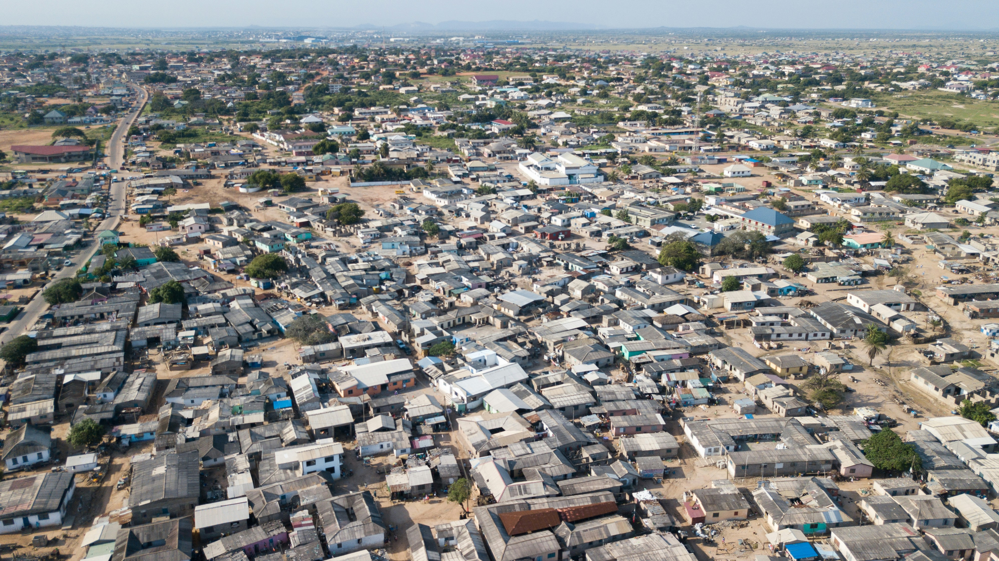
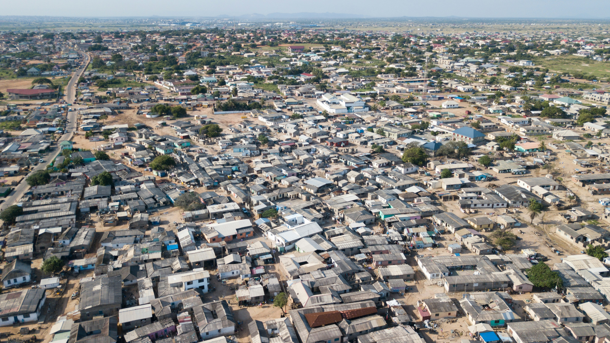

SLUMLINK
Sign In
SLUMLINK
Sign In
Transparent support that reaches the right people.
About SlumLink
Building a smarter, more inclusive system to connect urban slum communities with essential services.
 

Who are we?
SlumLink is an intelligent digital platform designed to improve service delivery, transparency, and coordination in urban slum communities. The platform bridges the gap between slum residents, NGOs, and local authorities through centralized household data, complaint reporting, and aid tracking.
Our Mission
Reduce communication barriers through voice and local-language support
Support data-driven decision-making for NGOs and authorities
Improve transparency and accountability in aid distribution
Enable easy access to essential services for slum residents
Who is this for?
Slum Residents
Report problems via text or voice and access aid easily.
NGOs
Plan aid programs, health camps, and monitor beneficiaries.